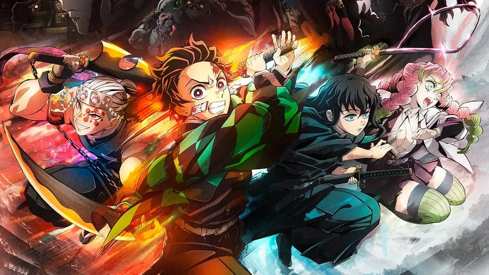

Historia de Kimetsu no Yaiba
Kimetsu no Yaiba, también conocido como Demon Slayer, es una historia que se desarrolla en el Japón Taisho. La trama sigue a Tanjiro Kamado, un joven bondadoso y trabajador que vive en las montañas junto a su madre y hermanos. Un día, después de bajar al pueblo a vender carbón, Tanjiro regresa a casa para descubrir que su familia ha sido brutalmente masacrada por demonios, seres que se alimentan de humanos para ganar fuerza y sobrevivir.
La única sobreviviente de la tragedia es su hermana menor, Nezuko, quien ha sido transformada en un demonio. A pesar de ello, Nezuko aún conserva una parte de su humanidad y no ataca a Tanjiro. Devastado y buscando venganza, Tanjiro jura encontrar una cura para Nezuko y evitar que otros sufran la misma tragedia que él. Pronto es reclutado por los Cazadores de Demonios, una organización secreta dedicada a exterminar demonios y proteger a la humanidad de estos seres.
A lo largo de su viaje, Tanjiro se enfrenta a numerosos desafíos y enemigos, desde demonios menores hasta poderosas Lunas Superiores, cada uno con habilidades aterradoras y su propio trágico pasado. A medida que entrena y mejora sus habilidades, Tanjiro domina la técnica de la "Respiración del Agua", un estilo de combate transmitido por los Cazadores de Demonios. Sin embargo, su verdadera fuerza radica en su determinación y compasión, lo que lo convierte en un cazador poco común.
La historia de Kimetsu no Yaiba explora temas de familia, sacrificio y redención, destacando la importancia de la conexión humana frente al sufrimiento. Tanjiro y Nezuko hacen amistad con otros cazadores, como Zenitsu Agatsuma e Inosuke Hashibira, quienes se convierten en sus compañeros inseparables. Juntos, enfrentan amenazas cada vez mayores mientras desafían la voluntad del Rey Demonio, Muzan Kibutsuji, quien busca destruir a todos los Cazadores de Demonios y dominar el mundo.
El anime se caracteriza por su animación espectacular, especialmente en las escenas de combate, y su profundo desarrollo de personajes. Cada demonio que enfrentan Tanjiro y sus amigos tiene una historia única y una razón detrás de su conversión en demonio, lo que agrega capas de complejidad a la trama. La serie ha ganado popularidad mundialmente, destacándose por sus escenas emotivas y la mezcla de acción, drama y toques de humor.
Kimetsu no Yaiba es más que una historia de venganza; es un viaje de superación, donde Tanjiro y sus amigos aprenden a enfrentar la adversidad y luchan para devolver la paz a un mundo acechado por la oscuridad de los demonios. La batalla contra Muzan y las Lunas Superiores representa el clímax de la historia, donde la voluntad de los cazadores se pone a prueba hasta el límite en su misión de proteger lo que más aman.